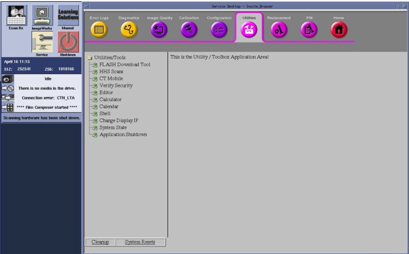
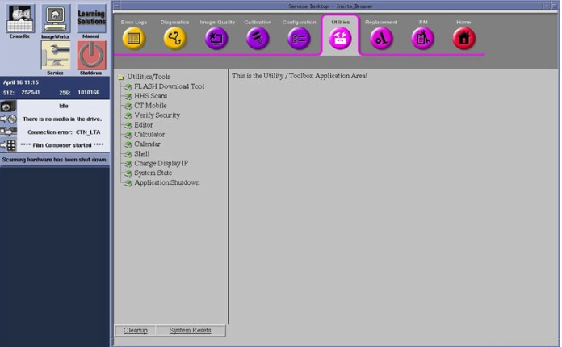
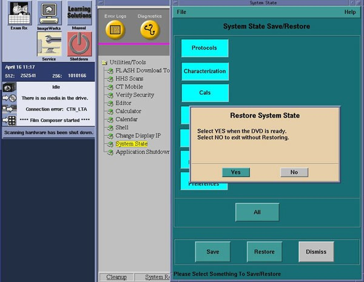
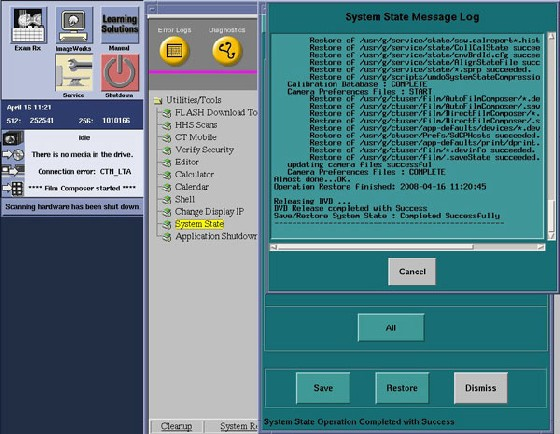
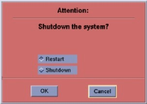

Operating Documentation
Direction 5321294, Rev# 3
GOC6 Service Methods
Operating Documentation |
| Required Persons | Preliminary Reqs | Procedure | Finalization |
|---|---|---|---|
| 1 | 10 mins |
The following procedures describe and illustrate the System State save and restore process. It is important to follow the steps listed below in order.
| Last revised: | 05 August 2008 |
| Item | Qty | Effectivity | Part# | Manufacturer |
|---|---|---|---|---|
| DVD-RAM Optical Media | 1 | - | - | - |
| Condition | Reference | Eff |
|---|---|---|
The Console Information Sheet should already be completed and on site from the system installation. This document contains site specific configuration details such as network address, printers and other system options details. Though not needed to perform the following procedure, the Console Information sheet is the fall back source of configuration information if the System State disk is lost or corrupt. | - | - |
Only trained service personnel should service the GE CT Scanner. | - | - |
Before proceeding with Save System State:
Use GE Healthcare approved media.
Make sure to have formatted DVD-RAM. See Peripheral Tower Functional Test for DVD-RAM disk initialization.
Make sure the DVD-RAM disk is not write-protected.
Insert the System State DVD-RAM optical media into the Peripheral Tower DVD-RAM drive.
| NOTE: | Use GE Healthcare approved media. |
Wait until the DVD-RAM drive is ready (i.e., front panel DVD drive LED is no longer lit).
Select: [Service] icon to access the Common Service Desktop (CSD).
Click [OK] as required.
Select: [Utilities] tab.
Illustration 1: Common Service Desktop (CSD), Utilities Tab

Select: [System State] . The System State Save/Restore screen appears.
Illustration 2: System State Window

Select [All] .
Select [Save]. The Restore System State pop-up window appears.
Select [Yes] in the Restore System State pop-up window.
Illustration 3: Restore System State Pop-up Window

Verify that the "Save" of System State was successful. A message at the end of the System State Message Log Window should state: Save/Restore System State: Completed Successfully.
Illustration 4: System State Message Log Window

When completed, select [Cancel], then [Dismiss].
Close the Common Service Desktop window at the upper left corner of the screen.
Remove System State DVD-RAM disk from the DVD Peripheral Tower. Label DVD-RAM disk appropriately and place in a safe location.
Insert a previously saved System State DVD-RAM into the SCSI Tower DVD drive.
Wait until the DVD drive is ready (i.e., front panel DVD drive LED is no longer lit).
Select the [Service] icon to access the CSD (Common Service Desktop).
Select: [Utilities].
Select: [System State]. The System State Save/Restore screen appears.
Select [All].
Select [Restore]. The Restore System State box appears.
Select [Yes].
Verify that the "Restore" of System State was successful. If not, restore the System State again. A message at the end of the Restore should display: Save/Restore System State Completed Successfully.
When completed, select [Cancel].
Select [Yes] when the Scan Hardware Reset pop-up appears.
When completed, select [Dismiss].
Remove System State DVD-RAM disk from the DVD Peripheral Tower and place in a safe location.
Reboot the Operators Console by selecting [Shutdown] Desktop, then select [Restart] in the Attention Window.
Illustration 5: System Shutdown Attention Window

Verify Save System State
Insert System State DVD-RAM disk in Peripheral Tower. Perform Functional Checks>Console>Peripheral Tower Functional Test, DVD-RAM Checks and confirm files have been saved to disk.
Verify Restore System State
Visually verify that the system has the correct configuration and preference settings by opening a Terminal Window.
Execute the system configuration script “reconfig”.
| NOTE: | See System Configuration for detailed instructions on running “reconfig.” |
Visually verify that Systems Settings and Preferences have been set correctly, comparing System Configuration and Preference settings with Console Information Sheet.